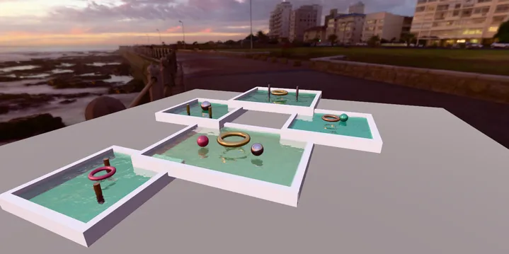

3D World & Simulation Water Lake
Multi Lake - RedGPU WebGPU Example
Renders multiple independent Lakes with distinct water levels and colors.
서로 다른 수위와 색상을 가진 여러 개의 독립된 호수(Lake)를 동시 렌더링합니다.

3D World & Simulation Water Lake
Renders multiple independent Lakes with distinct water levels and colors.
서로 다른 수위와 색상을 가진 여러 개의 독립된 호수(Lake)를 동시 렌더링합니다.
